Theorie üben für die Prüfung
Übe die SPL-Theorie für den Segelflugschein: eigene Fragen zu allen 9 Fächern, Prüfungssimulation und Erklärungen – auf Deutsch und offline.
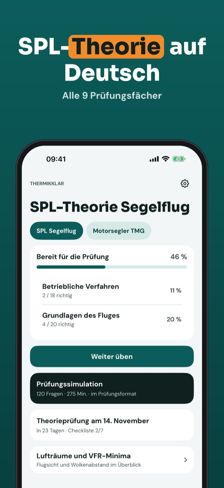
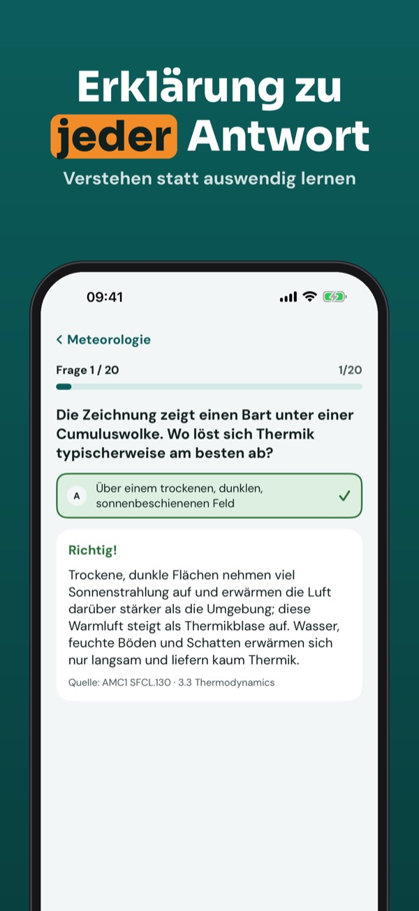
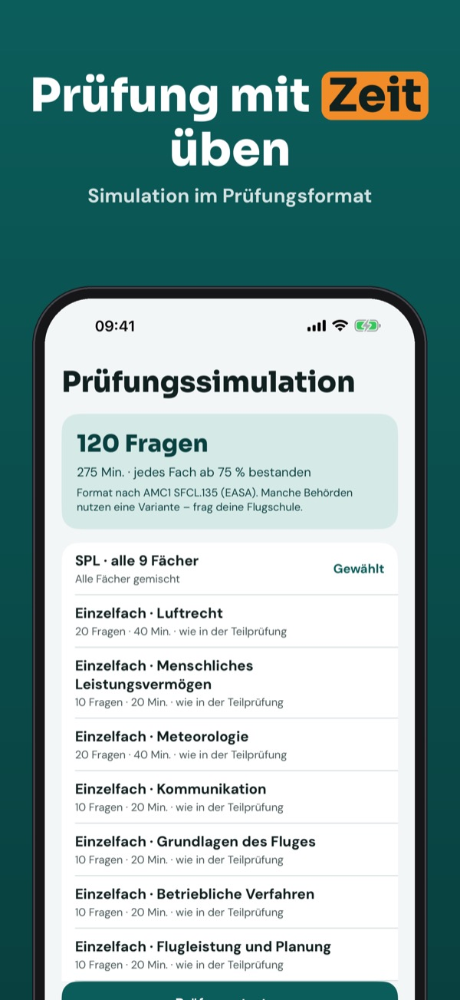
Thermikklar hilft dir, die Theorie für die Segelfluglizenz SPL zu üben – mit eigenen Fragen zu allen Prüfungsfächern und einer Erklärung zu jeder Antwort.
20 Fragen, die Begriffe und die Checkliste kannst du ohne Kauf nutzen. Die Vollversion ist ein Einmalkauf und schaltet alle Fragen, Simulationen und die Statistik frei. Kein Abo.
Thermikklar ist unabhängig und nicht mit EASA, LBA, Austro Control oder BAZL verbunden. Die Fragen sind eigene und stammen nicht aus dem ECQB.
Terms of Use (EULA): https://www.apple.com/legal/internet-services/itunes/dev/stdeula/
Privacy: https://baytechbv.github.io/privacy/segelflug-eu/
SPL-theorie oefenen
Oefen de SPL-theorie voor je zweefvliegbrevet: eigen vragen over alle 9 vakken, proefexamens en uitleg – in het Nederlands en offline.
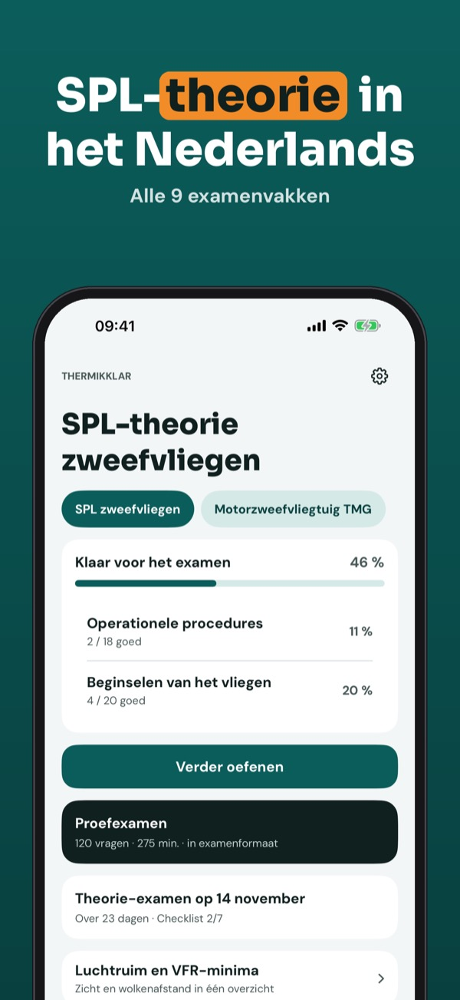
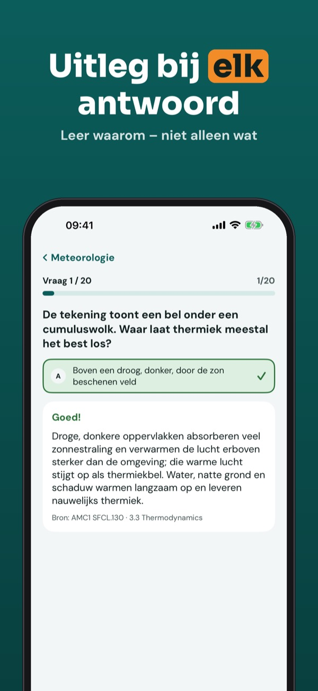
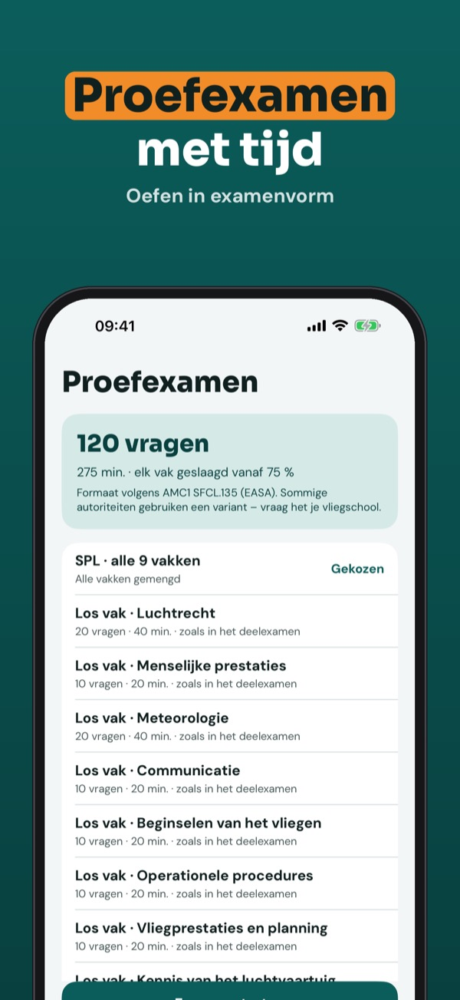
Thermikklar helpt je de theorie voor het zweefvliegbrevet SPL te oefenen – met eigen vragen over alle examenvakken en uitleg bij elk antwoord.
Je kunt 20 vragen, de begrippenlijst en de checklist zonder aankoop gebruiken. De volledige versie is een eenmalige aankoop die alle vragen, proefexamens en statistieken ontgrendelt. Geen abonnement.
Thermikklar is onafhankelijk en niet verbonden aan EASA of ILT. De vragen zijn eigen vragen en komen niet uit de ECQB.
Terms of Use (EULA): https://www.apple.com/legal/internet-services/itunes/dev/stdeula/
Privacy: https://baytechbv.github.io/privacy/segelflug-eu/
Öva inför SPL-provet
Öva SPL-teorin för segelflygcertifikatet: egna frågor i alla 9 ämnen, övningsprov och förklaringar – på svenska och utan internet.
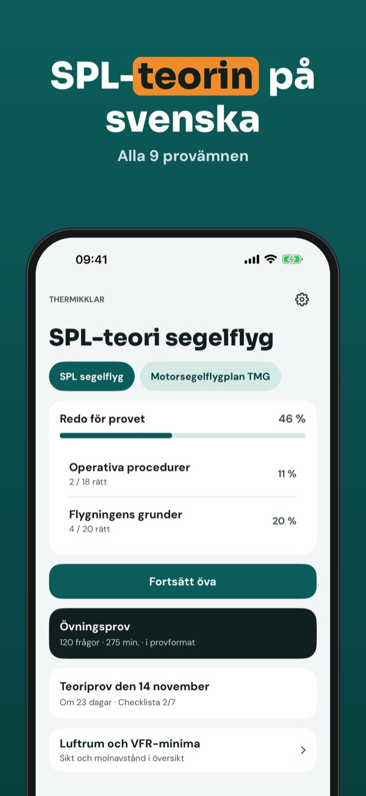
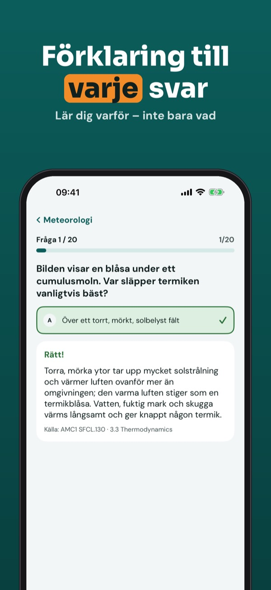
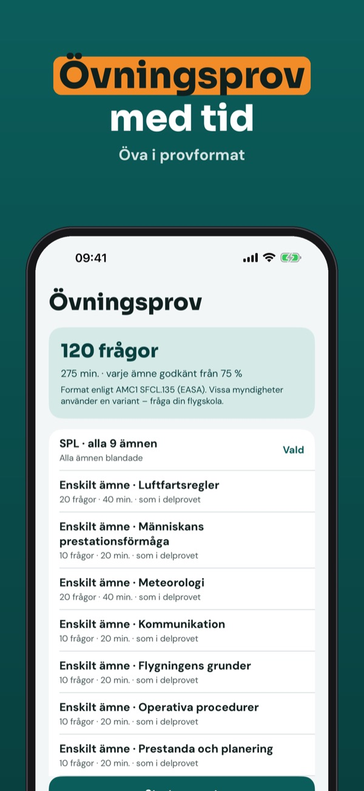
Thermikklar hjälper dig att öva teorin för segelflygcertifikatet SPL – med egna frågor i alla provämnen och en förklaring till varje svar.
Du kan öva 20 frågor, ordlistan och checklistan utan köp. Fullversionen är ett engångsköp som låser upp alla frågor, övningsprov och statistik. Ingen prenumeration.
Thermikklar är fristående och inte kopplad till EASA eller Transportstyrelsen. Frågorna är egna och kommer inte från ECQB.
Terms of Use (EULA): https://www.apple.com/legal/internet-services/itunes/dev/stdeula/
Privacy: https://baytechbv.github.io/privacy/segelflug-eu/
Øv teorien til SPL-prøven
Øv SPL-teorien til svæveflyvercertifikatet: egne spørgsmål i alle 9 fag, prøveeksamen og forklaringer – på dansk og uden internet.
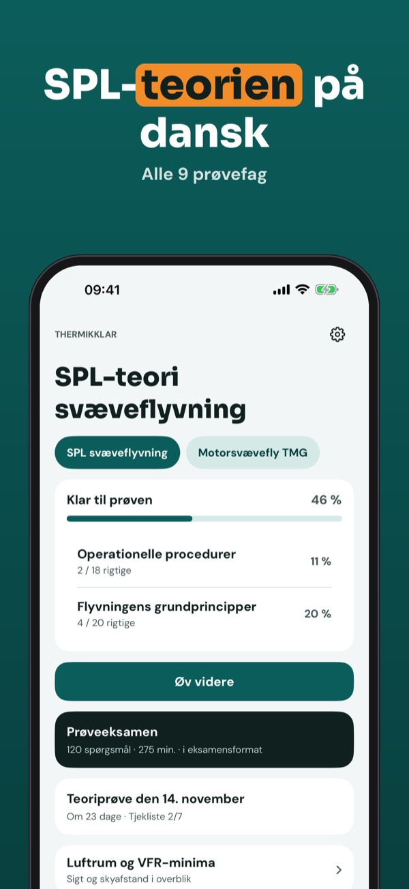
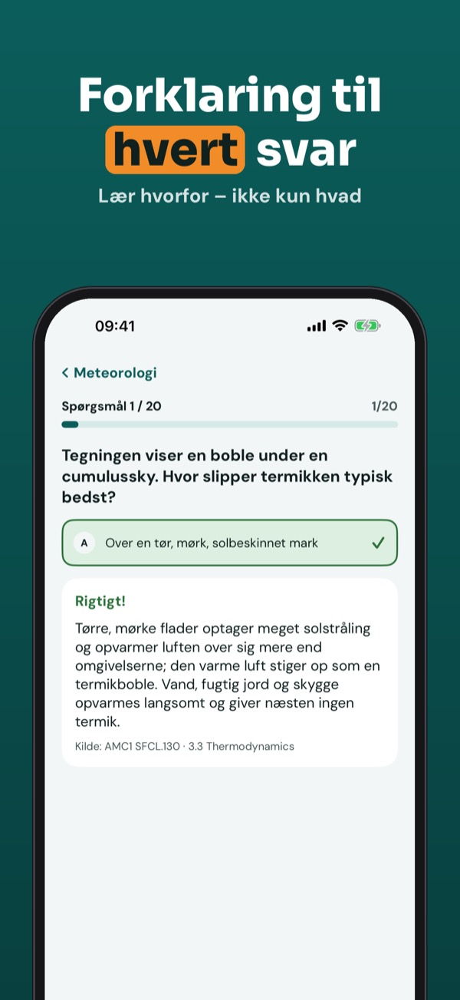
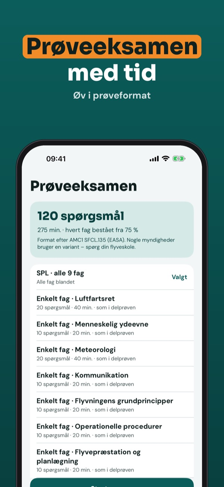
Thermikklar hjælper dig med at øve teorien til svæveflyvercertifikatet SPL – med egne spørgsmål i alle prøvefag og en forklaring til hvert svar.
Du kan øve 20 spørgsmål, ordlisten og tjeklisten uden køb. Den fulde version er et engangskøb, der låser alle spørgsmål, prøveeksamener og statistik op. Intet abonnement.
Thermikklar er uafhængig og ikke tilknyttet EASA eller Trafikstyrelsen. Spørgsmålene er vores egne og stammer ikke fra ECQB.
Terms of Use (EULA): https://www.apple.com/legal/internet-services/itunes/dev/stdeula/
Privacy: https://baytechbv.github.io/privacy/segelflug-eu/